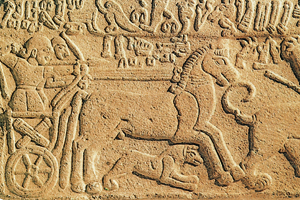

Lezione 2  Le antiche civiltà del Mediterraneo
Le antiche civiltà del Mediterraneo


HITTITI
Questo rilievo in pietra, databile all’inizio del III millennio a.C., raffigura una scena di caccia che nonostante le schematizzazioni grafiche (ad esempio la rigida resa di profilo) presenta un grande dinamismo nella resa della corsa del cavallo e dello scatto del leone a destra. Gli hittiti, un popolo originario della penisola anatolica, conquistano nella prima metà del II millennio a.C., grazie alle loro innovazioni militari, immensi territori che danno vita a un vasto Impero. Essi introducono il cavallo, ancora sconosciuto nell'area mesopotamica, un veloce carro da guerra a ruote raggiate e le armi in ferro.LUXOR
La grande statua in granito rosa di Ramses II nel tempio di Karnak, a Luxor, raggiunge i sei metri di altezza. Ai piedi del faraone, secondo una consuetudine tipica della statuaria egizia, è raffigurata Betan’tta, la favorita tra le sue figlie.QADESH
La battaglia di Qadesh, avvenuta nel 1274 a.C., si risolve in un sostanziale pareggio. Dai racconti dell'epoca, sembra che le forze in gioco fossero nettamente a favore degli hittiti (3.500 carri da guerra e 40.000 fanti contro i 2.000 carri e 16.000 fanti degli egizi), ma l'andamento della battaglia e il carisma di Ramses II, che scese in battaglia a differenza di Muwatalli, re degli hittiti, riequilibrarono il divario. Dopo la battaglia viene sancito a Qadesh il primo trattato di pace della storia. I sovrani si impegnavano a cessare le ostilità e a coalizzarsi in caso di attacco di terzi. Le due copie scritte del trattato venivano conservate nelle due rispettive capitali, Hattusha e Tebe.